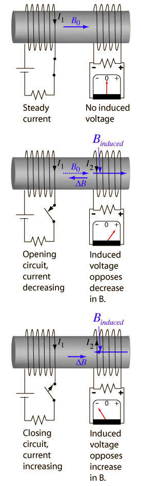

When a steady current flows in one coil as in the left illustration, a magnetic field is produced in the other coil. But since that magnetic field is not changing, Faraday's law tells us that there will be no induced voltage in the secondary coil. But if the switch is opened to stop the current as in the middle illustration, there will be a change in magnetic field in the right hand coil and a voltage will be induced. A coil is a reactionary device, not liking any change! The induced voltage will cause a current to flow in the secondary coil which tries to maintain the magnetic field which was there. The fact that the induced field always opposes the change is an example of Lenz' law. Once the current is interrupted and the switch is closed to cause the current to flow again as in the right hand example, an induced current in the opposite direction will oppose that buildup of magnetic field. This persistent generation of voltages which oppose the change in magnetic field is the operating principle of a transformer. The fact that a change in the current of one coil affects the current and voltage in the second coil is quantified in the property called mutual inductance. |
 |